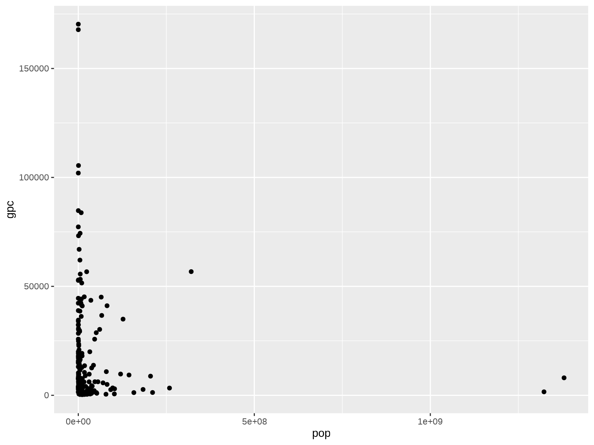
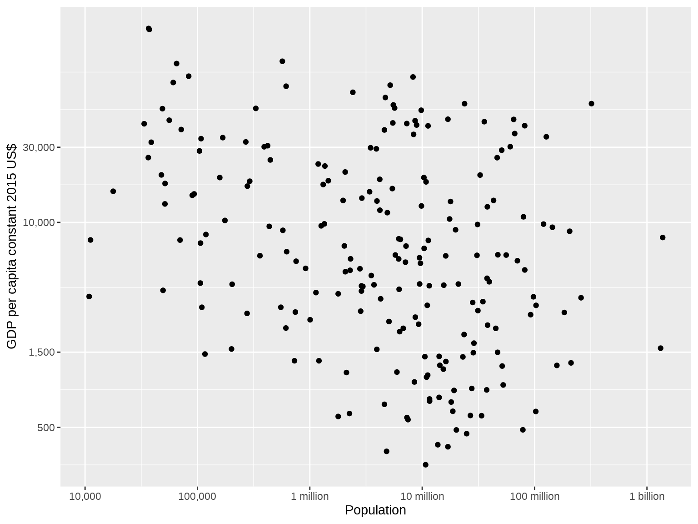

library(tidyverse)
library(ggplot2)
library(WDI)Exercises in plotting WDI data
Pull the data with R instead of downloading spreadsheet after spreadsheet
R
ggplot
In the old days I used to download WDI datasets in Excel format and point-and-click my way to a neat little chart. Now I want to try using the WDI package and some ggplot wizardry.
To start, let’s try plotting the GDP per capita of the Philippines and Vietnam in constant 2015 US$.
df <- WDI(
country = c("PH", "VN"),
indicator = "NY.GDP.PCAP.KD",
start = 1990
) %>%
as_tibble()
ggplot(df, aes(x = year, y = NY.GDP.PCAP.KD, color = country)) +
geom_line()Great. Now let’s try to get a cleaner chart by removing everything we don’t need: the axis labels, the legend title, the vertical grid lines, the tick marks. Let’s also add a chart title.
ggplot(df, aes(x = year, y = NY.GDP.PCAP.KD, color = country)) +
geom_line() +
labs(title = "GDP per capita in constant 2015 US$") +
theme(
axis.title = element_blank(),
axis.ticks = element_blank(),
legend.position = "right",
legend.title = element_blank(),
panel.grid.major.x = element_blank(),
panel.grid.minor.x = element_blank(),
panel.grid.minor.y = element_blank()
)It’s a serviceable chart, but not a particularly attractive chart. Let’s spend some more time glamming it up. The numbers on the y-axis could use a thousands separator. The plot lines could be a little thicker. We can also make tweaks to the text sizes, the colors, the margins, and so forth.
Code
ggplot(df, aes(x = year, y = NY.GDP.PCAP.KD, color = country)) +
geom_line(size = 1) +
labs(title = "GDP per capita in constant 2015 US$") +
scale_color_manual(values = c("#076fe4", "#f2500d")) +
scale_y_continuous(label = function(x) prettyNum(x, big.mark = ",", scientific = FALSE)) +
theme_minimal(base_family = "karla") +
theme(
axis.title = element_blank(),
axis.ticks = element_blank(),
axis.text.x = element_text(size = 11, margin = margin(5, 0, 0, 0)),
axis.text.y = element_text(size = 11, margin = margin(0, 5, 0, 0)),
plot.title = element_text(size = 14, hjust = .5, face = "bold", margin = margin(0, 0, 10, 0)),
legend.position = "right",
legend.title = element_blank(),
legend.text = element_text(size = 12),
panel.background = element_rect(fill = "gray97", color = NA),
panel.grid.major.x = element_blank(),
panel.grid.minor.x = element_blank(),
panel.grid.minor.y = element_blank()
)Now this to me is pleasing to the eye. A document populated with charts like this — as opposed to charts like the first two above — would be much more motivating to read.
Here’s a second exercise. I think one useful way to categorize countries is according to whether they are big and rich, big and poor, small and rich, or small and poor. We can visualize this in a scatterplot with population on one axis and GDP per capita on the other. Let’s load up the data and plot the scatter.
df <- WDI(
country = "all",
indicator = c(
"gpc" = "NY.GDP.PCAP.KD",
"pop" = "SP.POP.TOTL"
),
start = 2015,
end = 2015,
extra = TRUE
) %>%
as_tibble() %>%
filter(region != "Aggregates") %>%
select(country, gpc, pop) %>%
drop_na()
ggplot(df, aes(x = pop, y = gpc)) +
geom_point()
What an atrocious chart! To make it comprehensible, we’ll need to re-express the axes in log scale first.
ggplot(df, aes(x = log10(pop), y = log2(gpc))) +
geom_point() +
scale_x_continuous(
name = "Population",
breaks = c(log10(10^4), log10(10^5), log10(10^6), log10(10^7), log10(10^8), log10(10^9)),
label = c("10,000", "100,000", "1 million", "10 million", "100 million", "1 billion")
) +
scale_y_continuous(
name = "GDP per capita constant 2015 US$",
breaks = c(log2(500), log2(1500), log2(10000), log2(30000)),
label = function(x) prettyNum(2^x, big.mark = ",", scientific = FALSE)
)
Better! Let’s make further tweaks to the colors and so on to make it more attractive. In addition, let’s include some dividing lines to group big, small, rich, and poor countries. Some sensible definitions would be that “big” countries are those with 100 million people and above while “rich” countries are those with GDP per capita of $30,000 and above.
Code
ggplot(df, aes(x = log10(pop), y = log2(gpc))) +
geom_point(shape = 16, size = 3, color = "#076fe4") +
labs(title = "Big and small, rich and poor") +
geom_vline(xintercept = log10(10^8), size = .5, linetype = "dashed", color = "gray50") +
geom_hline(yintercept = log2(30000), size = .5, linetype = "dashed", color = "gray50") +
scale_x_continuous(
name = "Population",
breaks = c(log10(10^4), log10(10^5), log10(10^6), log10(10^7), log10(10^8), log10(10^9)),
label = c("10,000", "100,000", "1 million", "10 million", "100 million", "1 billion")
) +
scale_y_continuous(
name = "GDP per capita constant 2015 US$",
breaks = c(log2(500), log2(1500), log2(10000), log2(30000)),
label = function(x) prettyNum(2^x, big.mark = ",", scientific = FALSE)
) +
theme(
axis.title = element_text(size = 11),
axis.title.x = element_text(margin = margin(10, 0, 0, 0)),
axis.title.y = element_text(margin = margin(0, 10, 0, 0)),
axis.text.x = element_text(size = 10, margin = margin(5, 0, 0, 0)),
axis.text.y = element_text(size = 10, margin = margin(0, 5, 0, 0)),
axis.ticks = element_blank(),
plot.title = element_text(size = 12, hjust = .5, face = "bold", margin = margin(0, 0, 10, 0)),
panel.background = element_rect(fill = "gray97"),
panel.grid = element_blank()
)
And here’s the interesting result. Under this set of definitions, there are really only two big and rich countries: the United States and Japan. The biggest small and rich country is Germany, with a population of 82 million, while the richest small and poor country is Mexico, with a GDP per capita of $9,600. In short, no country in the near future is expected to join the big-and-rich club.1
Now let’s make some finishing touches to the chart. First, let’s add the labels “big”, “small”, “rich”, and “poor” on either side of the dashed lines to make it clear what they’re indicating. Second, let’s bold the axis labels “30,000” and “100 million” to highlight the chosen thresholds for bigness and richness. Third, let’s label the points for the U.S., Japan, Germany, and Mexico to facilitate the discussion accompanying the chart. We also highlight these four points by making all other points transparent.
Code
ggplot(df, aes(x = log10(pop), y = log2(gpc))) +
geom_point(shape = 16, size = 3, color = "#076fe4", alpha = ifelse(df$country %in% c("United States", "Japan", "Germany", "Mexico"), 1, .25)) +
labs(title = "Big and small, rich and poor") +
# Dashed lines
geom_vline(xintercept = log10(10^8), size = .5, linetype = "dashed", color = "gray50") +
geom_hline(yintercept = log2(30000), size = .5, linetype = "dashed", color = "gray50") +
annotate("text", family = "karla", x = log10(10^8) + .1, y = log2(200000), hjust = 0, label = "big", size = 3.5, color = "gray50") +
annotate("text", family = "karla", x = log10(10^8) - .1, y = log2(200000), hjust = 1, label = "small", size = 3.5, color = "gray50") +
annotate("text", family = "karla", x = log10(10.5^9), y = log2(30000) + .2, vjust = 0, label = "rich", size = 3.5, color = "gray50") +
annotate("text", family = "karla", x = log10(10.5^9), y = log2(30000) - .15, vjust = 1, label = "poor", size = 3.5, color = "gray50") +
# Highlighted points
annotate("text", family = "karla", x = log10(df$pop[df$country == "United States"]), y = log2(df$gpc[df$country == "United States"]) + .4, hjust = 0, vjust = 0, label = "United States", size = 3.5, fontface = "bold") +
annotate("text", family = "karla", x = log10(df$pop[df$country == "Japan"]) + .1, y = log2(df$gpc[df$country == "Japan"]), hjust = 0, vjust = 0, label = "Japan", size = 3.5, fontface = "bold") +
annotate("text", family = "karla", x = log10(df$pop[df$country == "Germany"]), y = log2(df$gpc[df$country == "Germany"]) + .4, hjust = .5, vjust = 0, label = "Germany", size = 3.5, fontface = "bold") +
annotate("text", family = "karla", x = log10(df$pop[df$country == "Mexico"]), y = log2(df$gpc[df$country == "Mexico"]) + .4, hjust = .5, vjust = 0, label = "Mexico", size = 3.5, fontface = "bold") +
scale_x_continuous(
name = "Population",
breaks = c(log10(10^4), log10(10^5), log10(10^6), log10(10^7), log10(10^8), log10(10^9)),
label = c("10,000", "100,000", "1 million", "10 million", "100 million", "1 billion")
) +
scale_y_continuous(
name = "GDP per capita constant 2015 US$",
breaks = c(log2(500), log2(1500), log2(10000), log2(30000)),
label = function(x) prettyNum(2^x, big.mark = ",", scientific = FALSE)
) +
theme_minimal(base_family = "karla") +
theme(
axis.title.x = element_text(size = 12, margin = margin(10, 0, 0, 0)),
axis.title.y = element_text(size = 12, margin = margin(0, 10, 0, 0)),
axis.text.x = element_text(size = 11, margin = margin(5, 0, 0, 0), face = c("plain", "plain", "plain", "plain", "bold", "plain")),
axis.text.y = element_text(size = 11, margin = margin(0, 5, 0, 0), face = c("plain", "plain", "plain", "bold")),
axis.ticks = element_blank(),
plot.title = element_text(size = 14, hjust = .5, face = "bold", margin = margin(0, 0, 10, 0)),
panel.background = element_rect(fill = "gray97", color = NA),
panel.grid = element_blank()
)
And here’s the final chart!